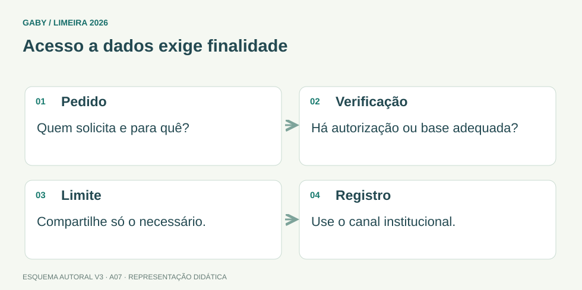

Objetivos do módulo
- Distinguir informação pública, restrita e sigilosa conforme regras aplicáveis.
- Aplicar o princípio de necessidade de acesso.
- Reconhecer condutas éticas no ambiente administrativo.
Acesso a dados exige finalidade

Descrição em texto do esquema
- Pedido: Quem solicita e para quê?
- Verificação: Há autorização ou base adequada?
- Limite: Compartilhe só o necessário.
- Registro: Use o canal institucional.
Oficina visual · aplique o esquema
Um colega pede uma lista com telefones pessoais dos usuários para uma finalidade particular. O acesso funcional permite entregar a lista?
Atividade autoral complementar da V3. Registre sua resposta; a resolução está no arquivo de gabarito e revisão.
Mapa do conteúdo
1. Ética profissional
Ética no trabalho administrativo envolve honestidade, responsabilidade, respeito, imparcialidade, zelo e uso adequado de recursos e informações. O servidor deve evitar conflitos de interesse e utilização do cargo para vantagens pessoais.
2. Sigilo não é segredo arbitrário
Sigilo profissional significa proteger informações cujo acesso é restrito por natureza ou regra aplicável. Não cabe ao servidor classificar tudo como “secreto” por conveniência, nem divulgar dados só por curiosidade de terceiros.
3. Necessidade de acesso
Uma boa regra prática é “acesso conforme necessidade funcional”: mesmo dentro da instituição, nem toda pessoa precisa acessar todo documento. Compartilhamento deve ter finalidade de trabalho e canal apropriado.
4. Conversas e ambiente físico
Falhas de sigilo podem ocorrer fora de sistemas: tela exposta, documento deixado em impressora, conversa em corredor, foto de tela, descarte inadequado. Segurança da informação também é comportamento.
5. Ética diante de erros
Ocultar erro tende a ampliar risco. A conduta responsável é registrar/comunicar conforme procedimento, buscar correção e evitar recorrência. Transparência interna não significa exposição pública indevida.
Exemplos resolvidos passo a passo
Exemplo 1
Situação: Colega de outro setor pede dados de cidadão “só por curiosidade”.
Exemplo 2
Situação: Documento confidencial ficou na impressora compartilhada.
Exemplo 3
Situação: Servidor percebe que lançou dado incorreto.
Pegadinhas e erros frequentes
- Confundir coleguismo com autorização de acesso.
- Conversar sobre casos sensíveis em local público.
- Compartilhar senha.
- Apagar evidência de erro sem procedimento.
Resumo de prova
- Ética envolve integridade, respeito e responsabilidade.
- Acesso deve ter finalidade funcional.
- Sigilo também depende de comportamento físico.
- Senha é pessoal e não deve ser compartilhada.
- Erros devem ser tratados com rastreabilidade.
Exercícios do módulo
Resolva sem consultar o arquivo de gabarito. As questões são autorais e construídas para treinar os conceitos do edital.
- obrigatório
- forma de eficiência
- inadequado
- boa prática
Fontes: Brasil — Lei 13.709/2018, LGPD, texto compilado · Brasil — Constituição Federal, texto compilado.
- para qualquer colega
- quando necessário e autorizado
- por curiosidade
- sempre sem registro
Fontes: Brasil — Lei 13.709/2018, LGPD, texto compilado · Brasil — Constituição Federal, texto compilado.
- risco de sigilo
- apenas problema estético
- melhoria de eficiência
- publicidade obrigatória
Fontes: Brasil — Lei 13.709/2018, LGPD, texto compilado · Brasil — Constituição Federal, texto compilado.
- favorecimento
- uso pessoal de recursos sem limite
- ocultação de erros
- honestidade e responsabilidade
Fontes: Brasil — Lei 13.709/2018, LGPD, texto compilado · Brasil — Constituição Federal, texto compilado.
- não falar com ninguém
- destruir registros
- proteger informação restrita conforme regras
- ocultar todo ato público
Fontes: Brasil — Lei 13.709/2018, LGPD, texto compilado · Brasil — Constituição Federal, texto compilado.
- enviar em grupo
- não fornecer sem necessidade/autorização
- fornecer por amizade
- publicar
Fontes: Brasil — Lei 13.709/2018, LGPD, texto compilado · Brasil — Constituição Federal, texto compilado.
- corrigir conforme procedimento e preservar histórico
- apagar tudo silenciosamente
- culpar usuário
- ignorar
Fontes: Brasil — Lei 13.709/2018, LGPD, texto compilado · Brasil — Constituição Federal, texto compilado.
- aumentar segurança
- ser obrigatório
- substituir registro
- violar sigilo
Fontes: Brasil — Lei 13.709/2018, LGPD, texto compilado · Brasil — Constituição Federal, texto compilado.
- publicidade
- arquivamento
- eticamente inadequado
- eficiente
Fontes: Brasil — Lei 13.709/2018, LGPD, texto compilado · Brasil — Constituição Federal, texto compilado.
- publicidade vence sempre
- devem ser conciliados conforme natureza e regras
- são sempre incompatíveis
- sigilo vence sempre
Fontes: Brasil — Lei 13.709/2018, LGPD, texto compilado · Brasil — Constituição Federal, texto compilado.
Quando terminar, abra Assistente Administrativo 07 - Ética e Sigilo Profissional - Gabarito e Revisão.
Checklist de domínio
- ☐ Distinguir informação pública, restrita e sigilosa conforme regras aplicáveis.
- ☐ Aplicar o princípio de necessidade de acesso.
- ☐ Reconhecer condutas éticas no ambiente administrativo.
Meta do módulo: 80% ou mais nas questões, sem depender de consulta.
Referências e conteúdos auxiliares
- Brasil — Lei 13.709/2018, LGPD, texto compiladoPrincípios de finalidade e necessidade, proteção de dados e tratamento pelo poder público.
- Brasil — Constituição Federal, texto compiladoLeia os dispositivos indicados no módulo e suas remissões no texto oficial.
Referências externas de apoio consultadas para a V3 em 27/09/2026. A origem das questões é o material autoral do projeto; estes links não indicam que uma instituição publicou ou validou os exercícios. As páginas externas precisam de internet. Em informática, confira a versão do programa; em legislação, observe o recorte e as regras de atualização do edital.